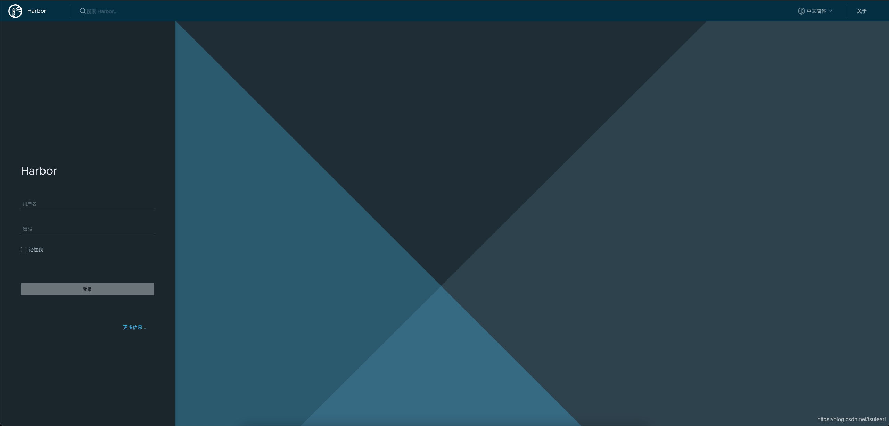

搭建Docker私有仓库Harbor
下载harbor
https://github.com/goharbor/harbor/releases
- harbor-online-installer-v2.5.3.tgz
解压
mkdir harbor
cd harbor
cp -rvf ~/Downloads/harbor-online-installer-v2.5.3.tgz ./
tar xvf harbor-online-installer-v2.5.3.tgz
cd harbor
创建两个目录
mkdir data
mkdir log修改配置
copy harbor.yml.temp 改成 harbor.yml
cp -rvf harbor.yml.tmpl harbor.yml修改harbor.yml配置
# hostname 要改成当前机器的ip
hostname: 192.168.101.7
# http related config
http:
# port for http, default is 80. If https enabled, this port will redirect to https port
# 端口需要改80 改成 8050或别的
port: 8050
# https 需要注释掉
database:
# 数据存放的位置
data_volume: local/data
log:
# 日志存放的位置
location: local/log运行按装脚本 ./install.sh
./install.sh看到上述字样则安装完成 根据yml配置访问WEB界面 默认的账号密码为：admin/Harbor12345
可能不成功
需要多运行几次docker-compose down; docker-comppose up -d
docker rm $(docker ps -aq)
docker-compose down
docker-compose up -d效果
